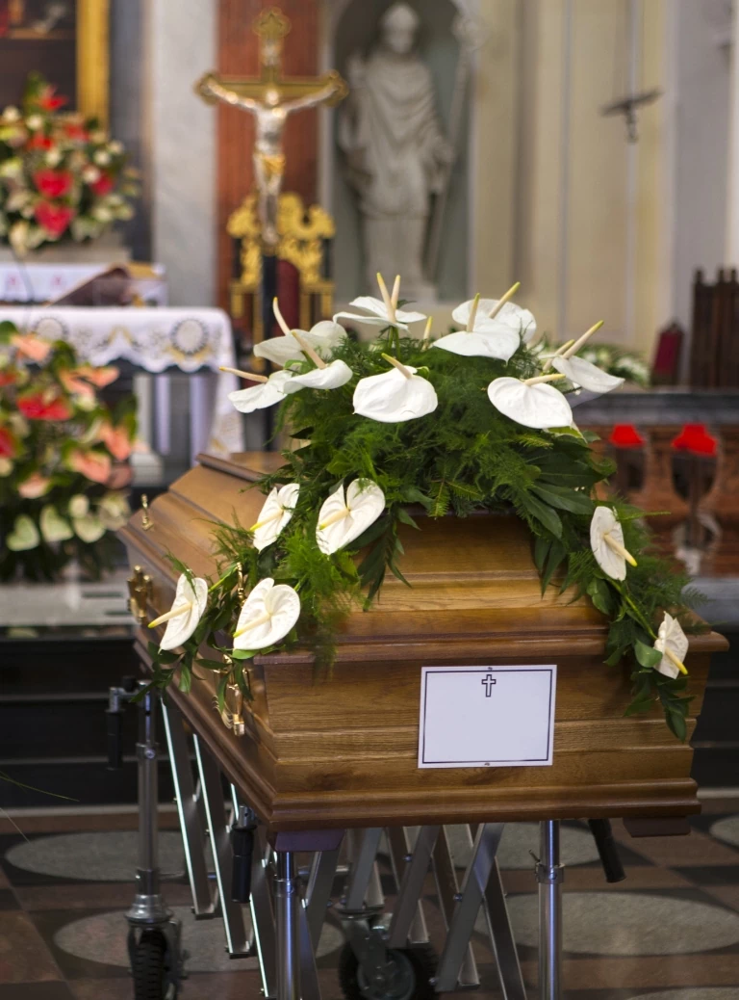

Formalności pogrzebowe krok po kroku
Przygotowaliśmy krótki schemat, dzięki któremu szybko przystąpią Państwo do organizacji pochówku.
W trudnych chwilach, jaką z pewnością jest śmierć bliskiej osoby, trudno skupić myśli i zająć się sprawami związanymi z ceremonią pogrzebową. Z tego względu przygotowaliśmy dla Państwa krótki schemat dotyczący tego, jak zająć się formalnościami pogrzebowymi krok po kroku.
Zgłoszenie zgonu
Wezwij lekarza (tel. 999 lub 112), który stwierdzi zgon i wystawi kartę zgonu — niezbędną do dalszych formalności.
Kontakt z zakładem pogrzebowym
Po uzyskaniu karty zgonu zadzwoń pod nr 500 073 188 — przewieziemy zmarłego do chłodni i przejmiemy formalności.
Wyrobienie aktu zgonu
Akt zgonu uzyskuje się w Urzędzie Stanu Cywilnego. Pierwszy odpis jest bezpłatny.
Ustalenie szczegółów pochówku
Wybór trumny lub urny, symboli religijnych, dekoracji oraz przygotowanie ciała do pochówku.
Formalności w ZUS
Złożenie wniosku ZUS Z-12 o zasiłek pogrzebowy — pomagamy w jego uzyskaniu.
Zgłoszenie zgonu
Dla wielu osób odejście bliskiej osoby jest ogromnym przeżyciem. Trudno się dziwić, że jeśli chodzi o formalności pogrzebowe, rodziny nie wiedzą zwykle, od czego zacząć ich załatwianie. W pierwszej kolejności trzeba skompletować dokumenty i poinformować odpowiednie służby o sytuacji, co umożliwi dalsze działania.
W przypadku śmierci w domu należy wezwać lekarza, który stwierdzi zgon i wystawi kartę zgonu. Jest ona niezbędna do rozpoczęcia formalności pogrzebowych i wystawienia aktu zgonu w Urzędzie Stanu Cywilnego. Należy zadzwonić pod numer 999 lub 112 i od razu poinformować, że bliska osoba nie żyje.
Kartę zgonu wystawia najczęściej lekarz POZ (rodzinny), a poza godzinami pracy ośrodka zdrowia – lekarz pogotowia ratunkowego. W przypadku śmierci w szpitalu lub hospicjum dokument wystawia lekarz prowadzący. Warto zwrócić uwagę na to, czy lekarz wystawił kartę zgonu, czy jedynie kartę informacyjną.
Kontakt z zakładem pogrzebowym
Po uzyskaniu karty zgonu należy skontaktować się z zakładem pogrzebowym (tel. 500 073 188). Jego pracownicy przewiozą zmarłego do chłodni. Udając się do zakładu pogrzebowego, należy mieć ze sobą odpowiednie dokumenty:
- kartę zgonu,
- dowód osobisty,
- legitymację ZUS osoby zmarłej (rencista, emeryt) bądź ostatni odcinek renty lub emerytury,
- zaświadczenie z zakładu pracy, jeśli osoba zmarła była zatrudniona na etat.
W naszym zakładzie pogrzebowym zajmujemy się kompleksową obsługą pogrzebów na terenie Gdyni i całego Trójmiasta. Oferujemy również pomoc w wypełnieniu wszystkich niezbędnych formalności związanych z pochówkiem zarówno tradycyjnym, jak i kremacyjnym.
Wyrobienie aktu zgonu
Wyrobienie aktu zgonu odbywa się w Urzędzie Stanu Cywilnego. Aby go otrzymać, należy wystąpić z wnioskiem o wystawienie aktu zgonu. Do uzyskania aktu zgonu niezbędne są następujące dokumenty:
- wypełniony wniosek o odpis aktu zgonu, w którym należy określić sposób otrzymania odpisu,
- karta zgonu wystawiona przez lekarza,
- dowód osobisty zmarłego,
- dowód osobisty osoby zajmującej się formalnościami pogrzebowymi.
Jeżeli załatwieniem formalności związanych z pogrzebem ma się zająć zakład pogrzebowy, osoba organizująca pochówek musi podpisać odpowiednie pełnomocnictwo. Pierwszy odpis aktu zgonu jest bezpłatny. Za każdy następny trzeba uiścić opłatę skarbową: 22 zł w przypadku odpisu skróconego i 33 zł w przypadku odpisu zupełnego.
Ustalenie szczegółów dotyczących pochówku
Po uzyskaniu aktu zgonu możliwe jest ustalenie wszelkich szczegółów dotyczących pochówku w zakładzie pogrzebowym: wyboru trumny lub urny, symboli religijnych, szarf, wieńców oraz innych dekoracji, które powinny pojawić się w kościele lub domu pogrzebowym, a także przygotowania ciała zmarłego do pochówku.
Jeśli z różnych przyczyn nie są w stanie Państwo dopilnować formalności związanych z organizacją pogrzebu, możemy zająć się nimi za Państwa. Prosimy o kontakt, a zajmiemy się wszystkim za Państwa.
Jakie formalności pogrzebowe trzeba załatwić w ZUS?
Po śmierci bliskiej osoby, osoby pokrywające koszty pogrzebu mogą ubiegać się o zasiłek pogrzebowy z ZUS. W tym celu należy złożyć wniosek ZUS Z-12 wraz z wymaganymi dokumentami, takimi jak skrócony odpis aktu zgonu oraz oryginały rachunków potwierdzających poniesione wydatki związane z pogrzebem. Wniosek należy złożyć w ciągu 12 miesięcy od dnia śmierci. ZUS ma obowiązek wypłacić świadczenie niezwłocznie, nie później niż w terminie 30 dni od wyjaśnienia ostatniej okoliczności niezbędnej do stwierdzenia uprawnień do zasiłku.
Wsparcie zakładu pogrzebowego w realizacji formalności
Doskonale znamy procedury i wiemy, jak zaplanować poszczególne etapy przygotowań do uroczystości, co przekłada się na sprawną organizację pogrzebu. Oferujemy kompleksową obsługę w Gdyni i Trójmieście, a w tym pomoc w uzyskaniu zasiłku pogrzebowego, co pozwala rodzinie skupić się na przeżywaniu żałoby, zamiast na sprawach administracyjnych.